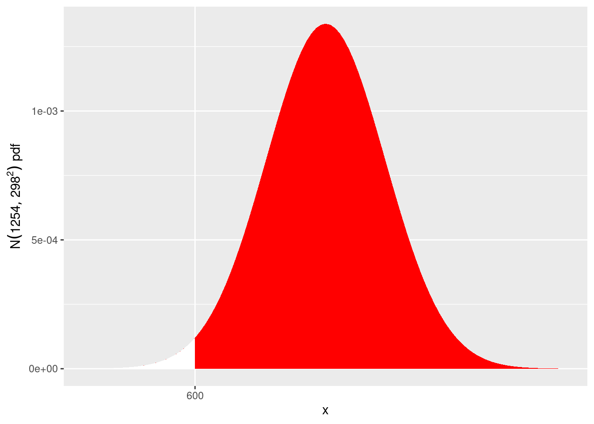
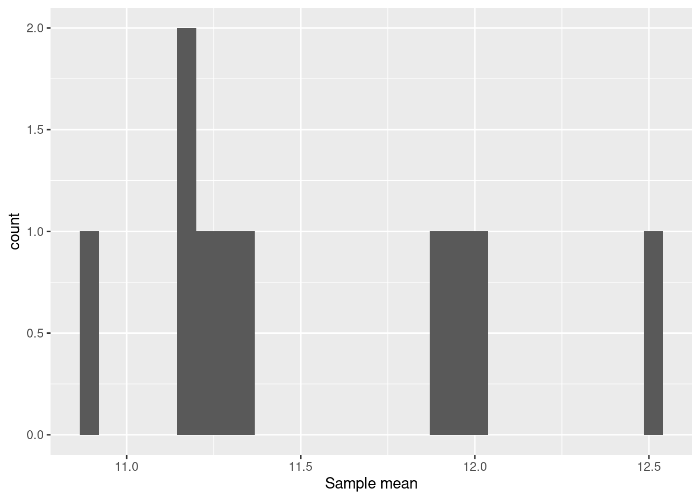

library(readxl)
rain <- read_excel("data/ENVX1002_Topic4.xlsx", sheet = "Sydney_rain")- ENVX1002_Data4.xlsx
- Alternatively download from Canvas
Normal distribution
Example 1 - Rainfall
I have downloaded the daily rainfall at Sydney’s Botanical Gardens from 1970-2021. Now I am going to answer the following questions
- Calculate the mean total annual rainfall and then calculate
- mean
- standard deviation
- histogram
## Calculate total annual rain using dplyr
library(dplyr)
Attaching package: 'dplyr'The following objects are masked from 'package:stats':
filter, lagThe following objects are masked from 'package:base':
intersect, setdiff, setequal, unionannual_rain <- rain %>%
group_by(Year) %>%
summarise(Annual_rain = sum(Precip_mm))mean_rain <- round(mean(annual_rain$Annual_rain), 0)
mean_rain[1] 1254sd_rain <- round(sd(annual_rain$Annual_rain), 0)
sd_rain[1] 298- Our mean is 1254 mm
- Our standard deviation is 298mm
library(ggplot2)
ggplot(annual_rain, aes(Annual_rain)) +
geom_histogram(bins = 6)Our distribution looks to be fairly symmetrical albeit a little right skewed. Later in the course you will learn to test if a dataset is normal, we will assume this dataset is. Therefore we can say that
X = Annual.rainfall \sim N(1254, 298^2)
- What is the probability that annual Sydney rainfall is less than 600 mm?
We want to calculate P(X < 600), we can plot this as follows
ggplot(data.frame(x = c(1254-4*298, 1254+4*298)), aes(x = x)) +
stat_function(fun = dnorm, args = list(mean = 1254, sd = 298),
geom = "area", fill = "red") +
stat_function(fun = dnorm, args = list(mean = 1254, sd=298),
xlim = c(1254-4*298, 600), geom = "area",
fill = "white") +
xlab("x") +
ylab(expression(N(1254,298^2)~pdf)) +
scale_x_continuous(breaks = 600)
To calculate the probability we can use pnorm
pnorm(600, 1254, 298)[1] 0.01409504So there is a 1.4% chance that less then 600mm of rain will fall in anyone year.
We can also standardise the variable and calculate the probability for the standard normal curve (or the standard normal tables in the old days https://en.wikipedia.org/wiki/Standard_normal_table)
P(X<600)=P(\frac{X-1254}{298}<\frac{600-1254}{298}) =P(Z<-2.194631)
pnorm(-2.194631)[1] 0.01409504NOTE: To plot P(X>600) we can make some slight modifications by changing the sign in xlim = c(1254-4*298, 600) to a +
ggplot(data.frame(x = c(1254-4*298, 1254+4*298)), aes(x = x)) +
stat_function(fun = dnorm, args = list(mean = 1254, sd = 298),
geom = "area", fill = "red") +
stat_function(fun = dnorm, args = list(mean = 1254, sd=298),
xlim = c(1254+4*298, 600), geom = "area",
fill = "white") +
xlab("x") +
ylab(expression(N(1254,298^2)~pdf)) +
scale_x_continuous(breaks = 600)- What is the 95% percentile of rainfall?
First we need to calculate the value of x at the 95th percentile
qnorm(0.95, 1254, 298)[1] 1744.166Therefore, 95% of annual total rainfall values are less than 1744.166 mm of rain
ggplot(NULL, aes(c(-3,3))) +
geom_area(stat = "function", fun = dnorm, args = list(mean = 1254, sd=298), fill = "#00998a", xlim = c(1254-4*298, 1254+4*298)) +
geom_area(stat = "function", fun = dnorm, args = list(mean = 1254, sd=298), fill = "grey80", xlim = c(1254-4*298, 1744.166)) +
xlab("x") +
ylab(expression(N(mean_rain,sd_rain^2)~pdf)) +
scale_x_continuous(breaks = 1744.166)ggplot(data.frame(x = c(1254-4*298, 1254+4*298)), aes(x = x)) +
stat_function(fun = dnorm, args = list(mean = 1254, sd = 298),
geom = "area", fill = "red") +
stat_function(fun = dnorm, args = list(mean = 1254, sd=298),
xlim = c(1254-4*298, 1744.166), geom = "area",
fill = "white") +
xlab("x") +
ylab(expression(N(1254,298^2)~pdf)) +
scale_x_continuous(breaks = 1744.166)
Sampling distribution
Example - simulation of the central limit theorem
Olson and Miller reported the inter-orbital widths (in mm), distance between the eyes, of domestic pigeons in their 1958 book, Morphological Integration. The following is a subset of the inter-orbital width (mm) of 40 domestic pigeons and the measurements are are as follows: 12.2, 12.9, 11.8, 11.9, 11.6, 11.1, 12.3, 12.2, 11.8, 11.8, 10.7, 11.5, 11.3, 11.2, 11.6, 11.9, 14.3, 11.2, 10.5, 11.1, 12.1, 11.9, 10.4, 10.7, 10.8, 11.0, 11.9, 10.2, 10.9, 11.6, 10.8, 11.6, 10.4, 10.7, 12.0, 12.4, 11.7, 11.8, 11.3, 11.1
IOW <- data.frame(width = c(12.2, 12.9, 11.8, 11.9, 11.6, 11.1, 12.3, 12.2, 11.8, 11.8, 10.7, 11.5, 11.3, 11.2, 11.6, 11.9, 14.3, 13.2, 10.5, 11.1, 12.5, 11.1, 10.4, 10.7, 10.8, 11.0, 11.1, 10.2, 10.9, 11.6, 10.8, 11.9, 10.4, 10.7, 12.0, 12.9, 13.7, 11.8, 11.3, 11.1))
mean(IOW$width)[1] 11.595sd(IOW$width)[1] 0.9122949ggplot(IOW, aes(width))+
geom_histogram(bins = 10)
set.seed(1)
sample_means <- data.frame(Sample_mean = vector(length = 10))
for(i in 1:10){
sample_means$Sample_mean[i] <- mean(sample(IOW$width, 5, replace = TRUE))
}
ggplot(sample_means, aes(Sample_mean))+
geom_histogram() +
xlab("Sample mean")`stat_bin()` using `bins = 30`. Pick better value with `binwidth`.mean(sample_means$Sample_mean)[1] 11.552set.seed(1)
sample_means <- data.frame(Sample_mean = vector(length = 100))
for(i in 1:100){
sample_means$Sample_mean[i] <- mean(sample(IOW$width, 5, replace = TRUE))
}
ggplot(sample_means, aes(Sample_mean))+
geom_histogram() +
xlab("Sample mean")`stat_bin()` using `bins = 30`. Pick better value with `binwidth`.
mean(sample_means$Sample_mean)[1] 11.581set.seed(1)
sample_means <- data.frame(Sample_mean = vector(length = 1000))
for(i in 1:1000){
sample_means$Sample_mean[i] <- mean(sample(IOW$width, 5, replace = TRUE))
}
ggplot(sample_means, aes(Sample_mean))+
geom_histogram() +
xlab("Sample mean")`stat_bin()` using `bins = 30`. Pick better value with `binwidth`.mean(sample_means$Sample_mean)[1] 11.57442set.seed(1)
sample_means <- data.frame(Sample_mean = vector(length = 10000))
for(i in 1:10000){
sample_means$Sample_mean[i] <- mean(sample(IOW$width, 5, replace = TRUE))
}
ggplot(sample_means, aes(Sample_mean))+
geom_histogram() +
xlab("Sample mean")`stat_bin()` using `bins = 30`. Pick better value with `binwidth`.mean(sample_means$Sample_mean)[1] 11.59095Example 3 - Past exam question
Interorbital widths (in mm) of 5 domestic pigeons are as follows: 12.2 12.9 11.8 11.9 11.2
Obtain the sample mean and sample standard deviation of the widths.
Calculate the standard error of the mean. Interpret this briefly but carefully, highlighting the difference in interpretation between the standard deviation and the standard error of the mean.
-Sample mean:
\overline{x}=\frac{12.2+12.9+11.8+11.9+11.2}{5}=12mm
- Sample sd:
s=\sqrt{\frac{1}{n-1}\sum_{i=1}^{5}(x_i-\overline{x})^2} =\sqrt{\frac{1}{5-1}((12.2-12)^2+(12.9-12)^2+...+(11.2-12)^2)} =0.62mm
Using R
pigeon <- c(12.2,12.9,11.8,11.9,11.2)
pigeon_mean <- mean(pigeon)
pigeon_mean[1] 12pigeon_sd <- sd(pigeon)
pigeon_sd[1] 0.6204837- The standard error of the mean
se(\overline{X})=\frac{s}{\sqrt{n}}=\frac{0.62}{\sqrt{5}}\approx0.28mm
By r:
pigeon_sem <-pigeon_sd/sqrt(length(pigeon)) ## length(pigeon) gives you n
pigeon_sem[1] 0.2774887The standard error (se) gives an estimate of how uncertain we are about the sample mean - it is effectively the standard deviation sd of the sample mean. The difference between sd and se is that sd describes the amount of variation in the sample being studied and the se describes the uncertainty in the estimate of the mean.